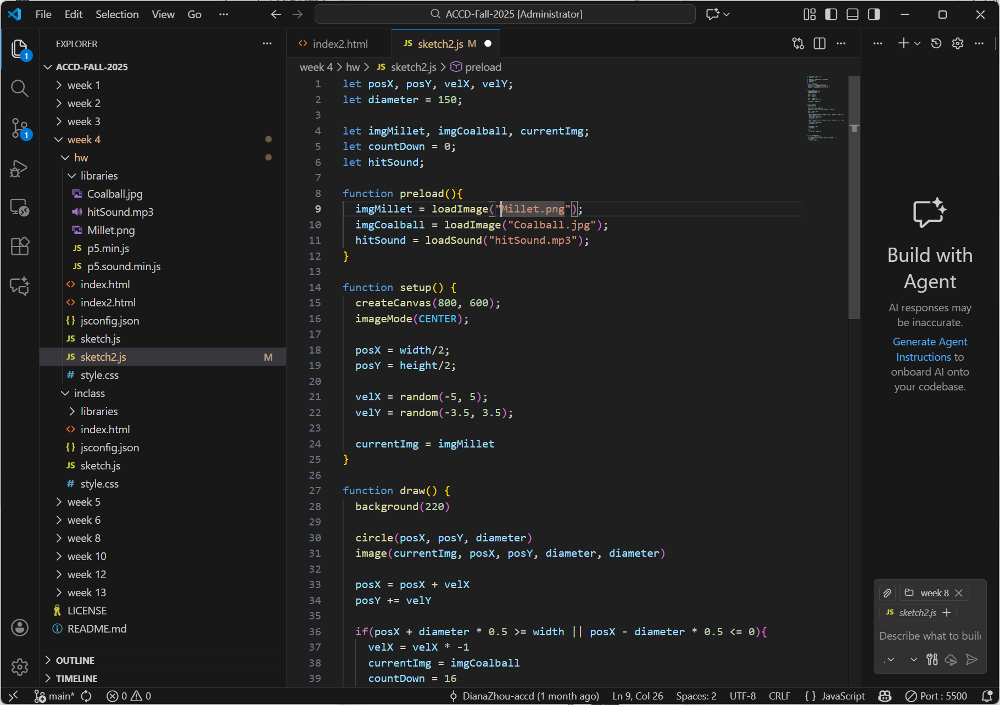

Non-Interactive Non-Linear Movement
A p5.js sketch exploring non-interactive, non-linear movement using randomness, images, and sound.
Process Video
Problems & Solutions
Problem 1 — Sketch stuck on “Loading…”
The sketch stayed on “Loading…” because assets in
preload() failed to load, which prevented p5.js from
starting.

Problem 2 — Images not loading (404 error)
The images did not appear because their file paths were incorrect.
I fixed this by adding the correct folder prefix
(
libraries/) and matching file names exactly.
Problem 3 — Sound file not playing
The sound failed to load due to an incorrect file path and browser
audio restrictions. I corrected the path and triggered the sound
through user interaction (
mousePressed()).
Problem 4 — Mouse click not triggering sound consistently
Click detection was incorrect because it used the canvas center
instead of the moving object’s position.
Sketch
The animation below runs automatically and demonstrates non-linear, non-interactive movement with image and sound feedback.